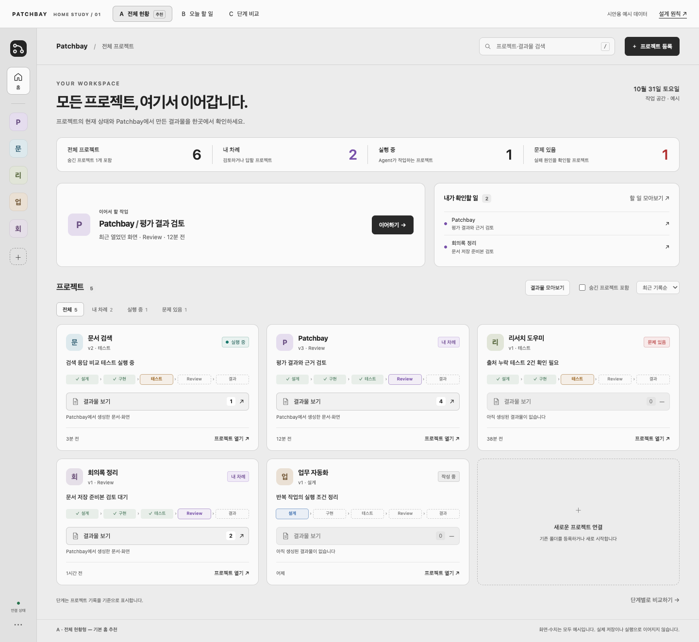
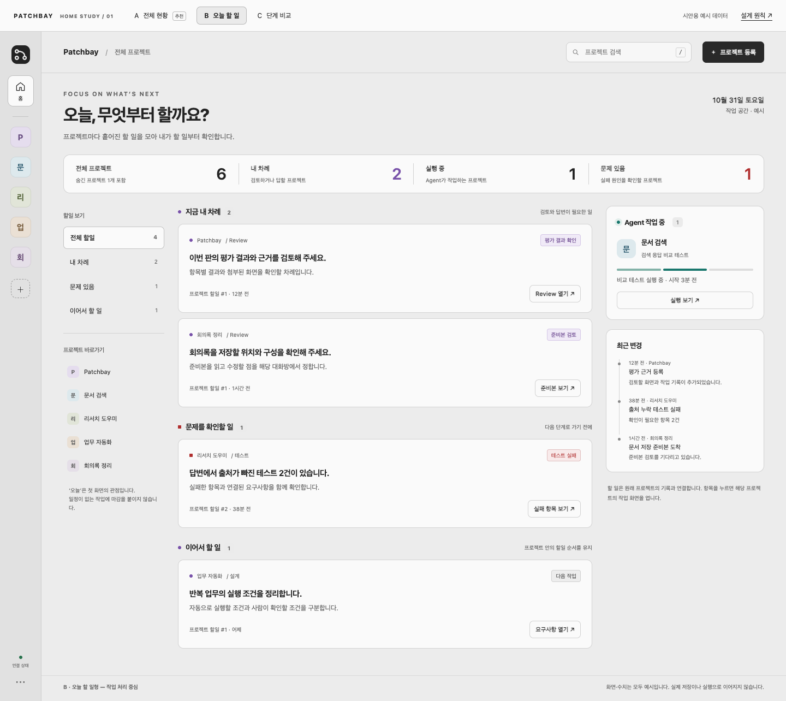
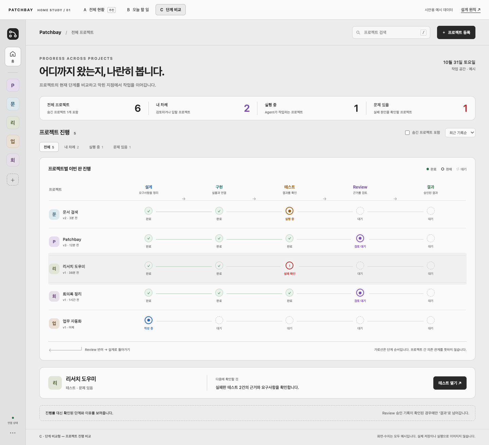

A / OVERVIEW · 검토 중
전체 현황형
‘프로젝트 상태와 만든 결과물을 어디서 보지?’
목록을 둘러보고 프로젝트와 결과물을 찾는 시작점.
- 중심
- 프로젝트 카드 + 생성 결과물 검색·열람
- 장점
- 프로젝트 상태와 결과물을 한곳에서 확인
- 한계
- 여러 프로젝트의 할일을 비교하려면 한 번 더 이동
같은 프로젝트와 기록을, 서로 다른 우선순위로 보여주는 메인 화면입니다. 모든 내용은 시안용 예시입니다.

‘프로젝트 상태와 만든 결과물을 어디서 보지?’
목록을 둘러보고 프로젝트와 결과물을 찾는 시작점.

‘내가 지금 무엇부터 하면 되지?’
프로젝트를 넘나드는 검토와 작업에 집중하는 시작점.

‘어디까지 왔고, 어디가 막혔지?’
여러 프로젝트의 진행을 나란히 살펴보는 시작점.
프로젝트와 결과물을 함께 검색하고, 카드의 ‘결과물 보기’에서 생성한 문서·화면을 살펴봅니다. 결과물이 없으면 버튼이 비활성화됩니다. 예시 데이터로 동작하는 검토용 시안입니다.